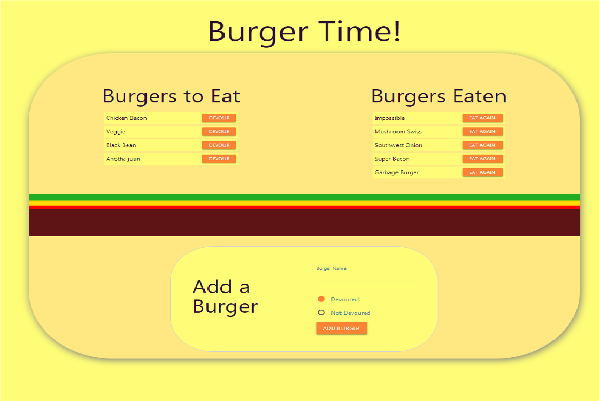
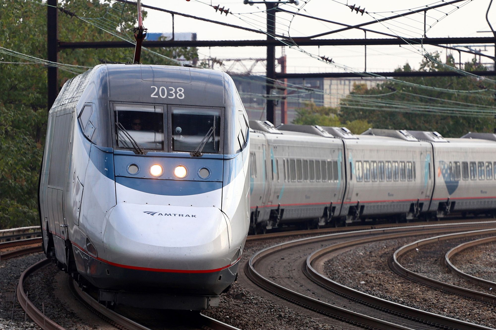

Welcome
I'm Kramer Johnson, a full stack web developer who is always excited to learn something new about computer science. I excel in use of JavaScript, MySQL, Node.js, Express, React, Handlebars, MongoDB, and Sequelize, along with experience programming in Python. I have a background in real-estate development which has given me strong quantitaive, communication, and collaboration skills. I possess Bachelor's degrees in both Economics and Philosophy which has provided me the analyitical and problem soliving skills necessary to become a quality asset to any development team.
Background
- 2009 - 2013: Western Washington University Bachelor's of Arts in Economics Bachelor's of Arts in Philosophy
- 2014 - 2015: English Teacher in South Korea
- 2016 - 2020: Accountant at SECO Development
- 2019 - 2020: University of Washington Full Stack Web Development Bootcamp
Skills
- JavaScript
- Node.js
- jQuery
- Html and CSS
- Express
- React
- MongoDB
- MySQL
- Firebase
- Sequelize
- Python
LightSnow
Light-Snow is a web application built for skiers and snowboarders.
Users can check the weather at their favorite ski resorts quickly getting
only the most important info. The app has integration with LIFX color changing
light bulbs so the user can have a light in their bedroom change color depending on
the weather at the resort.
What's My Data?
What's My Data? is an educational website where users can visit and learn about all the data that every
website and gather about them. The website also logs the basic information about each user and displays
charts displaying this data.

FriendFinder
FriendFinder is a web app for finding new friends and love interests. Users enter their name, a photo
url, choose their gender and gender preference, answer ten questions about themselves, and hit submit to
see who their closest match is.

BurgerTime
BurgetTime is a restaurant app that let's users log the burgers they have eaten and want to eat in the
future.

TrainWatch
TrainWatch allows users to login with their Google accout and keep track of trains, their next arrival
times, and how much time they have left until they leave.